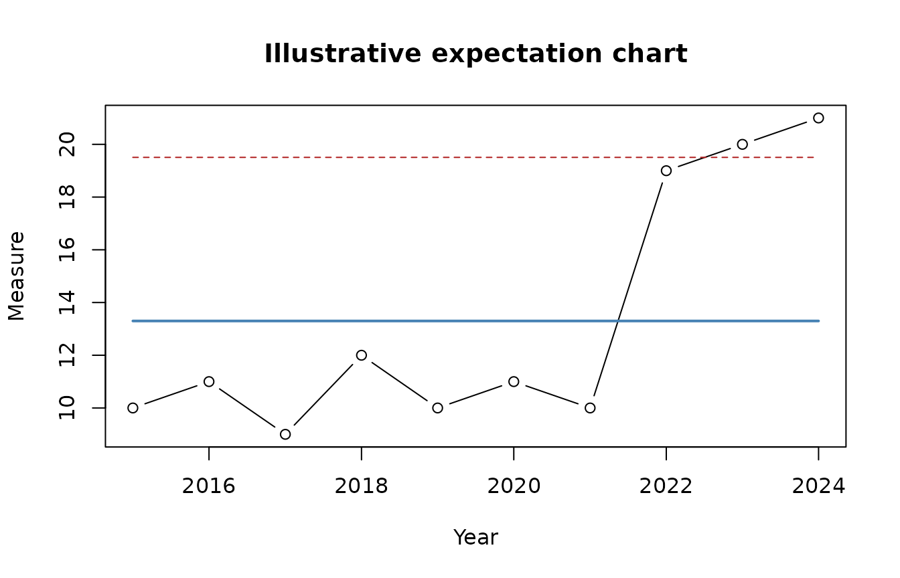

Longitudinal Analysis: From Observation to Policy Insight
Dan Swart
Source:vignettes/longitudinal-analysis.Rmd
longitudinal-analysis.RmdThe analytical purpose
Policy analysts often receive a series of measurements and are asked whether conditions are improving, worsening, or responding to a policy change. A table of averages or a comparison between two selected years can conceal the order in which observations occurred. Longitudinal analysis begins by preserving that order.
policycraft organizes the work as Observe →
Reason → Insight:
- Observe: establish what was measured, how, when, and under which system.
- Reason: examine temporal patterns, predictable limits, runs, direction, data quality, and plausible alternative explanations.
- Insight: explain what the evidence supports, what it does not support, and what decision-makers may reasonably investigate or consider next.
The expectation chart is one tool in this process. It is not the product. The product is the analyst’s carefully qualified policy insight.
Routine and non-random behavior
Most systems are influenced by many small forces. Measurements from such a system fluctuate, even when no important change has occurred. An expectation chart estimates a center and limits from the sequential behavior of the data. Observations within those limits may look irregular while remaining consistent with the routine system.
Some patterns warrant investigation—for example, an observation beyond an expectation limit or a sufficiently long run on one side of the center. These signals indicate that the pattern is difficult to explain as routine behavior alone. They do not identify the responsible force and do not establish that a particular policy caused the pattern.
Prepare longitudinal data
policy_data <- data.frame(
year = 2015:2024,
measure = c(10, 11, 9, 12, 10, 11, 10, 19, 20, 21),
jurisdiction = "Example Board"
)
prepared <- as_policy_data(policy_data, year, measure)
prepared[, c("date", "value", "jurisdiction")]
#> # A tibble: 10 × 3
#> date value jurisdiction
#> <date> <dbl> <chr>
#> 1 2015-01-01 10 Example Board
#> 2 2016-01-01 11 Example Board
#> 3 2017-01-01 9 Example Board
#> 4 2018-01-01 12 Example Board
#> 5 2019-01-01 10 Example Board
#> 6 2020-01-01 11 Example Board
#> 7 2021-01-01 10 Example Board
#> 8 2022-01-01 19 Example Board
#> 9 2023-01-01 20 Example Board
#> 10 2024-01-01 21 Example BoardThe explicit date and value selections are intentional. Real policy files can contain multiple dates, targets, denominators, estimates, and subgroup values. The analyst—not an automatic guess—should determine which fields answer the question being considered.
Calculate an untrended expectation chart
chart_data <- expectation_chart_data(policy_data, year, measure)
chart_data[, c(
"date", "value", "center", "lower_limit", "upper_limit",
"outside_limits"
)]
#> # A tibble: 10 × 6
#> date value center lower_limit upper_limit outside_limits
#> <date> <dbl> <dbl> <dbl> <dbl> <lgl>
#> 1 2015-01-01 10 13.3 7.09 19.5 FALSE
#> 2 2016-01-01 11 13.3 7.09 19.5 FALSE
#> 3 2017-01-01 9 13.3 7.09 19.5 FALSE
#> 4 2018-01-01 12 13.3 7.09 19.5 FALSE
#> 5 2019-01-01 10 13.3 7.09 19.5 FALSE
#> 6 2020-01-01 11 13.3 7.09 19.5 FALSE
#> 7 2021-01-01 10 13.3 7.09 19.5 FALSE
#> 8 2022-01-01 19 13.3 7.09 19.5 FALSE
#> 9 2023-01-01 20 13.3 7.09 19.5 TRUE
#> 10 2024-01-01 21 13.3 7.09 19.5 TRUEThe function estimates sigma from the average moving range of successive observations. Its limits describe the baseline represented by the supplied data. They are not performance standards, desired targets, confidence intervals, or acceptable-policy boundaries.
plot(
chart_data$date,
chart_data$value,
type = "b",
xlab = "Year",
ylab = "Measure",
main = "Illustrative expectation chart"
)
lines(chart_data$date, chart_data$center, col = "steelblue", lwd = 2)
lines(chart_data$date, chart_data$upper_limit, col = "firebrick", lty = 2)
lines(chart_data$date, chart_data$lower_limit, col = "firebrick", lty = 2)
Examine runs
chart_data$run_signal <- detect_runs(chart_data$value, chart_data$center)
chart_data[, c("date", "value", "outside_limits", "run_signal")]
#> # A tibble: 10 × 4
#> date value outside_limits run_signal
#> <date> <dbl> <lgl> <lgl>
#> 1 2015-01-01 10 FALSE FALSE
#> 2 2016-01-01 11 FALSE FALSE
#> 3 2017-01-01 9 FALSE FALSE
#> 4 2018-01-01 12 FALSE FALSE
#> 5 2019-01-01 10 FALSE FALSE
#> 6 2020-01-01 11 FALSE FALSE
#> 7 2021-01-01 10 FALSE FALSE
#> 8 2022-01-01 19 FALSE FALSE
#> 9 2023-01-01 20 TRUE FALSE
#> 10 2024-01-01 21 TRUE FALSEBy default, detect_runs() marks the eighth and
subsequent observations in a run on the same side of the center. A value
exactly on the center and a missing value interrupt a run. Rules should
be declared before interpreting the chart; they should not be changed
repeatedly until the analyst finds a preferred story.
Decide whether an expectation chart is suitable
Before relying on either a trended or untrended chart, ask:
- Are observations comparable over time?
- Did definitions, collection procedures, denominators, or reporting coverage change?
- Is temporal spacing meaningful and correctly represented?
- Does aggregation conceal materially different subgroups or jurisdictions?
- Is a sustained trend substantively plausible?
- Would a trended chart describe a stable direction, or merely normalize a policy-relevant change that should be investigated?
Run, line, bar, and cohort charts help the analyst inspect direction, composition, gaps, and grouping structure before selecting an expectation-chart form.
Move from signal to insight
longitudinal_summary(policy_data, year, measure)
#> # A tibble: 1 × 10
#> observations first_date last_date center lower_limit upper_limit
#> <int> <date> <date> <dbl> <dbl> <dbl>
#> 1 10 2015-01-01 2024-01-01 13.3 7.09 19.5
#> # ℹ 4 more variables: average_moving_range <dbl>, outside_limit_signals <int>,
#> # run_signals <int>, investigate <lgl>The summary’s investigate value is deliberately modest.
Investigation may include checking data quality, identifying changes in
the system, consulting program staff and affected communities, examining
implementation timelines, and testing alternative explanations.
A responsible policy briefing distinguishes:
- Observation: what the ordered measurements show.
- Analytical reasoning: why the pattern does or does not appear routine.
- Context: what institutional evidence and policy knowledge add.
- Uncertainty: what remains unknown or weakly supported.
- Insight: what decision-makers should understand or investigate.
The software supports the first two steps. The analyst is responsible for the rest.